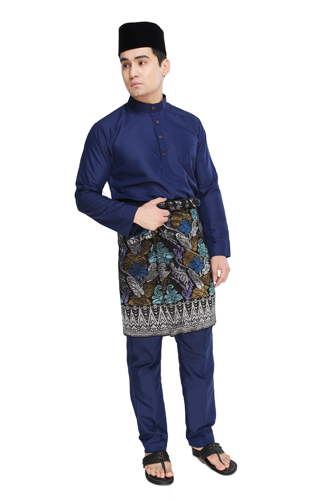
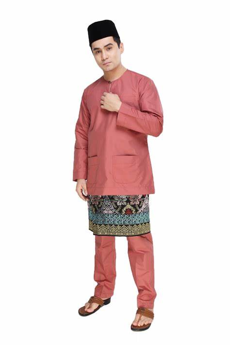
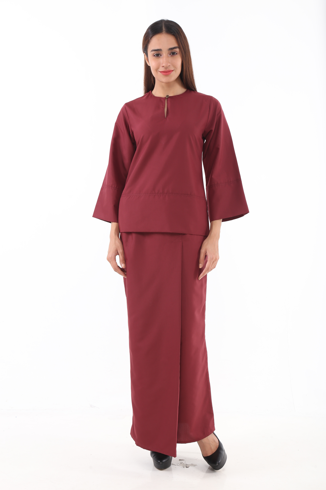
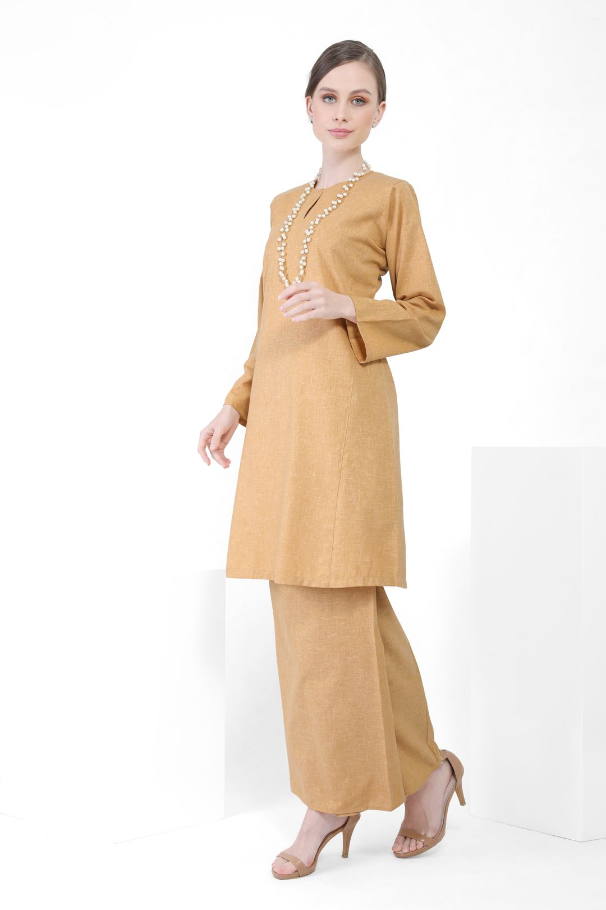

MyBaju Sdn Bhd is a Baju Melayu and Baju Kurung specialist company in Selangor
The company custom and tailor made variety of Baju Melayu and Baju Kurung which is a traditional Malay costume traditionally worn by men and women in Malaysia
In shirts made with the cekak musang collar, the placket of the baju will seem to form a third of the baju from the top when it is worn beneath the kain samping or kain sarung. However, the hemline of the baju actually runs to the middle of the lap. The placket typically has three to five buttonholes and is fastened together by dress studs called kancing or sitat which are not unlike those used in Western-style formal dress shirts. The studs usually have screw-on backs and can be made from a variety of materials including gold, silver, and precious or semi-precious stones. The studs may also be connected with a light metal chain which will be concealed behind the shirt when the placket is fastened.
 Please Register To OrderIn the state of Johor, both the design and the wearing of Baju Melayu is somewhat different from that of other areas. Here, the kain samping or kain sarung is worn below the baju rather than above it. The baju itself does not have the cekak musang collar or any placket. Instead, the opening is hemmed with stiff stitching called tulang belut (literally eel's spine) and ends with a small loop at the top of one side to fit a singular kancing (similar to the collars of Baju Kurung worn by women). This style is known as the Teluk Belanga style and was believed to be designed by Sultan Abu Bakar's aides to commemorate the move of Johor's administrative capital from Teluk Belanga in Singapore to Tanjung Puteri in 1866 (known as Johor Bahru from 1866)
 Please Register To OrderBaju Kurung Kedah is believed to have been influenced by Thailand, as the style resembles a short blouse worn in southern Thailand. It is made short to the level of the hips and is usually worn with batik cloth without much decoration. Kedah style is considered to be a loose dress and popular daily wear in the northern states of Malaysia. Kedah style has a neck with Teluk Belanga style
 Please Register To OrderBaju Kurung Pahang or also known as Baju Kurung Riau-Pahang reveals the historical relationship between the two Malay states of Riau and Pahang. This style was inspired by Tengku Ampuan Mariam, the daughter of Sultan Ahmad Al-Muazam Shah. Tengku Ampuan Mariam was married to Sultan Badrul Alam Shah. Many collections of Pahang style were collected from Terengganu and Pahang. In contrast to the standard Baju Kurung, Pahang style has a Cekak Musang collar with seven or nine buttons
 Please Register To Order